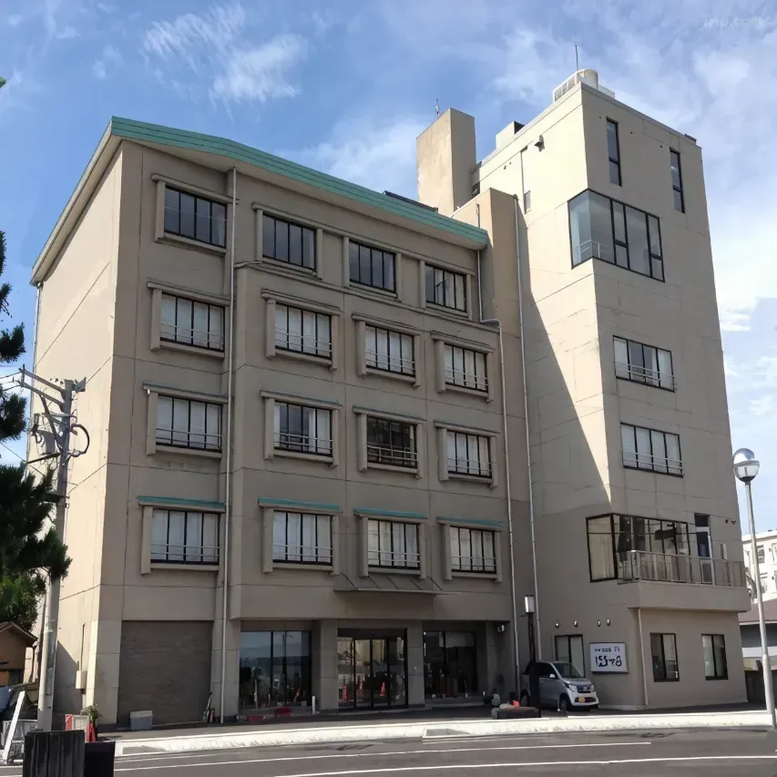

상위 문서: 상위 문서
틀 포함: 틀:러브
틀 포함: 틀:러브
목차
- 1. 개요
- 2. 가는 방법
- 3. 무대 위치
- 3.1. 카나자와 시내
- 3.1.1. 우타츠야마 공원(卯辰山公園)
- 3.1.2. 오쿠우타츠야마 현민공원(奥卯辰山健民公園)
- 3.1.3. 카나자와역
- 3.1.4. 겐로쿠엔(兼六園)
- 3.1.5. 카나자와성 공원(金沢城公園)
- 3.1.6. 이시카와현립 음악당(石川県立音楽堂)
- 3.1.7. 오미쵸 시장(近江町市場)
- 3.1.7.1. 다이마츠 수산본사회부(大松水産本社刺身部)
- 3.1.7.2. 잇푸쿠요코쵸(いっぷく横丁)
- 3.1.7.3. 오미쵸 카이센동야 히라이 이치바관 점(近江町海鮮丼家ひら井いちば館店)
- 3.1.8. 건민 스포츠 플라자(健民スポーツプラザ)
- 3.1.9. 카가 유센 회관(加賀友禅会館)
- 3.1.10. 카나자와 축음기 관(金沢蓄音器館)
- 3.1.11. 시이노키 영빈관(しいのき迎賓館)
- 3.1.12. 히가시차야 거리(ひがし茶屋街)
- 3.1.13. 니시차야 거리(にし茶屋街)
- 3.1.14. 그릴 오츠카(グリルオーツカ)
- 3.1.15. 이시카와현립도서관(石川県立図書館)
- 3.1.16. 오오노 카라쿠리 기념관(大野からくり記念館)
- 3.1.17. 아카네야 아카이브 갤러리 (茜やアーカイブギャラリー)
- 3.1.18. 가나자와 민속박물관(金沢くらしの博物館)
- 3.1.19. 오야마 신사(尾山神社)
- 3.2. 노노이치시
- 3.3. 하쿠산시
- 3.4. 카가시
- 3.5. 노미시
- 3.6. 코마츠시
- 3.7. 나나오시
- 3.8. 후쿠이현
- 3.9. 도쿄도
- 3.9.1. 구 후루카와 정원(旧古河庭園)
- 3.9.2. 도쿄 타워(東京タワー)
- 3.9.3. 칸다묘진(神田明神)
- 3.9.4. 사토 샘플(佐藤サンプル)
- 3.9.5. 라포레 하라주쿠(ラフォーレ原宿)
- 3.9.6. 시부야 스크램블 스퀘어(渋谷スクランブルスクエア)
- 3.10. 아이치현
- 3.11. 이바라키현
- 3.12. 미국
- 4. 기타
- 5. 참고
- 각주
1. 개요
스쿨 아이돌 프로젝트 러브 라이브! 하스노소라 여학원 스쿨 아이돌 클럽의 무대탐방 관련 내용을 정리한 문서이다.프로젝트 소개문에서 나오는 것처럼 이시카와 현의 중심도시인 카나자와시를 배경으로 한다.
2. 가는 방법
아래는 2026년 5월 1일 기준이다.2.1. 도쿄권 출발
도쿄역 출발 기준 호쿠리쿠 신칸센을 타면 약 2시간 반에서 3시간에 갈 수 있다. 일반적으로 코마츠 공항 직항 노선이 없는 지역에서 이용할 수 있다. 인천국제공항에 코마츠 직항 노선이 있기 때문에 코마츠 공항 직항 노선이 없는 지역에서 나리타 직항 노선(부산, 청주, 대구, 제주), 하네다 직항 노선(김포)을 이용해서 도쿄역으로 간 뒤에 신칸센으로 갈 수 있다. 다만, 코마츠 공항 직항이 없기 때문에 이때는 도쿄에서 1박을 한 뒤 가야 할 필요가 있다.- 2시간 반 정도가 소요되는 카가야키 등급의 경우 연휴나 주말 등을 제외하면 일반적으로 오전, 저녁시간대 즉 출퇴근 인접시간에만 운행한다. 전석지정석 열차이므로 반드시 지정석특급권을 사야 한다. 도쿄역발 지정석 14,380엔, 그린샤 20,840엔, 그란 클라스[1] 29,020엔.
- 3시간 정도가 소요되는 하쿠타카 등급의 경우 거의 모든 시간대에 운행한다. 도쿄역발 자유석 13,850엔. 지정석 및 그린샤, 운임+요금은 상동. 그란 클라스 25,040엔.
예전에는 호쿠리쿠 아치 패스를 사용하면 30,000엔에 도쿄-가나자와 왕복이 가능했는데, 2026년 3월 14일부로 35,000엔으로 인상되어, 여행 일정을 계획하면서 이익을 되는지 계산해야 할 필요가 있다. 도쿄역과 나리타 국제공항 사이를 해당 패스로 왕복으로 이용해도 이익을 보기 어려울 수 있으니 주의.
2.2. 간사이 지방 출발
간사이 권에서는 선더버드와 호쿠리쿠 신칸센을 타면 2시간에서 2시간 반 정도 걸린다. 마찬가지로 코마츠 공항 직항 노선이 없는 지역에서 간사이 지방으로 올 경우 간사이 공항 직항 노선(김포, 부산, 대구, 청주, 제주)을 통해 갈 수 있다. 간사이권도 마찬가지로 도착해서 1박을 한 뒤에 가야 할 필요가 있다.간사이 공항에서 바로 오는 경우, HARUKA 편도 티켓, 호쿠리쿠 편도 티켓을 사용하여 교토/츠루가 환승이면 8,700엔으로 갈 수 있다. 참고로, 호쿠리쿠 편도 티켓은 JR서일본 공식 홈페이지에서 구입이 안 된다.
간사이•호쿠리쿠 패스 이용도 괜찮다. 패스 요금이 19000엔에 7일간 이용이다. 간사이 공항 - 카나자와역 왕복이 외국인 편도 할인 요금 17,400엔에 하술할 유노쿠니 텐쇼에 가기 위해선 카가온센역 경유가 반강제적인데 패스로 왕복 운임&지정석요금 7140엔을 제하면 이미 본전이기 때문이다. 패스 사용으로 인한 유연한 일정 변경은 덤이다.
2.3. 코마츠 공항 이용
비행기를 이용할 경우 가장 가까운 공항은 코마츠 공항이다. 대한항공이 인천-코마츠 편을 매일 운항중이다. 그 외에는 하네다 경유시 국내선을 무료로 제공하는 전일본공수로 김포-하네다-코마츠 노선을 이용할 수 있다.[2] 도쿄권 덕질을 동시에 할 생각이라면 하네다 경유 전일본공수쪽을 추천.카나자와 도심까지 호쿠리쿠 철도가 운영하는 4열 리무진 버스나, 코마츠역 경유 루트를 이용하여 카나자와로 오면 된다.
리무진 버스는 카나자와역 서쪽 출구에서 출발, 도착하며 요금은 1,300엔이다. 자유석 제도이고 고속도로를 이용하므로, 입석이 불가하며 보조좌석 이용을 안내받을 수 있다. 차내에서 정리권[3]을 받고, 내리면서 구입한 티켓을 넣거나 현금으로 내면 된다. 교통카드 사용은 전국 비호환 카드인 ICa만 가능하고, 2025년부터 신용카드 터치결제(마스터카드 제외)도 가능하다. 승차권을 구입하고 싶거나 Suica 같은 전국호환 교통카드를 이용하고 싶으면, 호쿠리쿠 철도 티켓 센터와 코마츠 공항 1번 승강장 근처의 자동 매표기에서 구입이 가능하다.
코마츠역 경유를 해서 가도 된다. 코마츠역-코마츠 공항 공항연락선 버스를 이용하고, 보통열차(IR 이시카와 철도선)나 신칸센을 이용해 카나자와역까지 갈 수 있다. 코마츠역-코마츠 공항 간 버스는 일반 버스와 자율주행 버스의 2종류가 있는데, 일반 버스의 경우 신용카드 터치결제만을 지원하며, 자율주행 버스는 전국호환 교통카드만을 지원한다. 물론 현금 납부도 가능. 운임은 버스 280엔, 철도 580엔 총 860엔이다. 신칸센 운임은 510엔, 요금은 자유석 특정특급권 880엔, 지정석 2,400엔, 그린샤 3,170엔인데, 배차간격과 속달성에서 신칸센이 조금 앞서긴 한다만 도쿄-누마즈의 그것 마냥 시간차가 1시간 이상 벌어지는 건 아닌지라 리무진 > 연락버스+보통열차 순으로 이용을 권장한다.
3. 무대 위치
아래 서술된 내용은 대부분 2024년 이시카와현 노토 지방 지진 발생 이전 시점을 다루고 있으므로, 다를 수 있으니 주의. 특히 해안가나 북쪽으로 올라갈수록 안전 상의 문제로 폐쇄되거나 일시적인 접근 금지가 걸린 지역들이 보고되고 있다.3.1. 카나자와 시내
3.1.1. 우타츠야마 공원(卯辰山公園)
 | |
| 미하라시다이 | |
 [4] [4] |
미하라시다이 동쪽으로 조금만 가면 후레아이 히로바(ふれあい広場)라는 잔디밭이 나오는데 여기서 103기, 104기 4월 Fes×LIVE가 열렸다.
3.1.2. 오쿠우타츠야마 현민공원(奥卯辰山健民公園)
 | |
| 오쿠우타츠야마 현민공원 | |
| 주소 | 이시카와현 카나자와시 와카마츠마치 エ85 (石川県金沢市若松町エ85) |
| 전화번호 | 076-264-0395 |
| |
 |
| 벚꽃 광장 |
3.1.3. 카나자와역
 | |
| 카나자와역 | |
| 주소 | 이시카와 현 카나자와 시 키노신보마치 1-1 (石川県金沢市木ノ新保町1-1) |
링크라 오프닝 영상에 스쳐지나간다. 103기 7월 Fes×LIVE가 이곳에서 열렸다.
하나 둘에 하스노소라! 1화에서 캐스트들이 직접 방문하였다.
역 동쪽 출구 근처에 위치한 카나자와 포러스 5층[6]에 게이머즈 하스노소라점이 출점해 있다.[7]
3.1.4. 겐로쿠엔(兼六園)
 | |
| 겐로쿠엔 | |
| 주소 | 이시카와 현 카나자와 시 마루노우치 1-1 (石川県金沢市丸の内1番1号) |
| 전화번호 | 076-234-3800 |
한국어  | |
이시카와현에서 가장 유명한 곳 중 한 곳이지만 직접적으로 캐릭터와 관련있는 성지인 곳은 아니었던지라 이왕 카나자와에 간 김에 가보는 사람들이 많았지만, 2024년 2월 출시된 [[무라노 사야카/Link! Like! 러브 라이브!#s-3.2.17|[하스노소라 카루타] 무라노 사야카]] 카드에서 드디어 직접적으로 등장했다.
오미쵸 시장과 붙어 있다.
27화에서 캐스트들이 방문하였다.
3.1.5. 카나자와성 공원(金沢城公園)
 | |
| 카나자와성 공원 | |
| 주소 | 이시카와 현 카나자와 시 마루노우치 1-1 (石川県金沢市丸の内1番1号) |
| 전화번호 | 076-234-3800 |
| 한국어 | |
103기 초반에 스리즈 부케가 참가하려다가 연습 중에 넘어지는 카호를 대신해 코즈에가 부상당한 적이 있던 카나자와 지역 스쿨 아이돌들이 나오는 이벤트가 여기서 열렸었고, 11월 Fes x Live도 열렸었다. 호쿠리쿠 지방예선을 위한 스테이지를 선정하기 위해 찾아오기도 했다.
3.1.6. 이시카와현립 음악당(石川県立音楽堂)
 | |
| 이시카와현립 음악당 | |
| 주소 | 이시카와 현 카나자와 시 쇼와마치 20-1 (石川県金沢市昭和町20-1) |
| 전화번호 | 076-232-8111 |
| 영업시간 | 9:00~22:00 |
 | |
 |
| 내부 |
3.1.7. 오미쵸 시장(近江町市場)
 | |
| 오미쵸 시장 | |
| 주소 | 이시카와 현 카나자와 시 오미쵸 50 (石川県金沢市上近江町50) |
| |
3.1.7.1. 다이마츠 수산본사회부(大松水産本社刺身部)
 | |
| 다이마츠 수산본사회부 | |
| 전화번호 | 076-221-8383 |
| 영업시간 | 8:00～18:00 |
| 휴무일 | 매주 수요일(부정휴무) |
| |
3.1.7.2. 잇푸쿠요코쵸(いっぷく横丁)
 | |
| 잇푸쿠요코쵸 | |
| 전화번호 | 076-223-3789 |
| 영업시간 | 8:30～18:30 |
| 휴무일 | 매주 수요일(공휴일 제외)[8] |
| | |
하나 둘에 하스노소라! 27화에서 노나카 코코나, 사사키 코토코가 방문하였으며, 일러스트를 재현하였다.
3.1.7.3. 오미쵸 카이센동야 히라이 이치바관 점(近江町海鮮丼家ひら井いちば館店)
 | |
| 오미쵸 카이센동야 히라이 이치바관 점 | |
| 주소 | 이시카와현 카나자와시 아오쿠사마치 88(오미쵸 이치바관 2층) (石川県金沢市青草町８８ 近江町いちば館２F) |
| 전화번호 | 076-234-0448 |
| 영업시간 | (월, 화, 목, 금)11:00～21:30 (수요일)11:00~15:30 (토, 일, 공휴일) 10:30～ |
| 휴무일 | 매해 1월 1일 |
 | |
본점과 이치바관 점(분점)이 나뉘어 있으니 주의. 성지로 등장한 것은 분점이다.
3.1.8. 건민 스포츠 플라자(健民スポーツプラザ)
 | |
| 건민 스포츠 플라자 | |
| 주소 | 이시카와 현 카나자와 시 니시이즈미 6-188 (石川県金沢市西泉6-188) |
| 전화번호 | 076-247-8999 |
| |
게임에 등장한 후 시설에서 하스노소라에 등장했다는 안내문을 게재하는 등 적극적으로 홍보 중이다.
이 곳은 이시카와현에 하나밖에 없는 실내 아이스링크로, 7~9월에는 아이스링크를 아예 운영하지 않으니 방문할 때 주의하자. 그나마 호쿠리쿠에서 가장 운영기간이 긴(연간 9개월) 아이스링크로, 운영하지 않는 기간에 스케이트를 타려면 아예 나고야까지 가야 한다.
작중 배경으로 나온 아이스링크는 2층에 있으며, 이용객이 적은 시간대라면 프론트 직원에게 견학을 요청하고 별도 요금 없이 링크를 구경만 하는 것도 가능하다. 또한 7-9월 아이스링크 미 운영 기간에도 스포츠 플라자 자체는 영업하기 때문에 내부를 볼 수 있다. 하절기에는 실내 연습장과 다목적 홀만 운영하기 때문에 아이스링크에는 얼음이 없고 내부 조명도 다 꺼두지만, 견학을 요청하면 흔쾌히 조명도 켜주니 정식으로 요청 후 방문하는 것이 좋다.
2025년 8월, 옥외 대형 냉동기가 침수피해를 입어서 복구 중에 있으며, 아이스링크는 2026년 3월 20일부터 운영을 재개한다.
3.1.9. 카가 유센 회관(加賀友禅会館)
 | |
| 카가 유젠 회관 | |
| 주소 | 이시카와 현 카나자와 시 코쇼마치 8-8 石川県金沢市小将町8-8) |
| 전화번호 | 076-224-5511 |
| [9] | |
3.1.10. 카나자와 축음기 관(金沢蓄音器館)
 | |
| 카나자와 축음기 관 | |
| 주소 | 이시카와 현 카나자와 시 오와리쵸 2-11-21 石川県金沢市尾張町2丁目11-21) |
| 전화번호 | 076-232-3066 |
| |
3.1.11. 시이노키 영빈관(しいのき迎賓館)
 | |
| 시이노키 영빈관 | |
| 주소 | 이시카와 현 카나자와 시 히로사카 2-1-1 石川県金沢市広坂2丁目1-1) |
| 전화번호 | 076-261-1111 |
| |
3.1.12. 히가시차야 거리(ひがし茶屋街)
 | |
| 히가시차야 거리 | |
| 주소 | 이시카와현 가나자와시 히가시야마 1조메 (石川県金沢市東山一丁目) |
| |
면적 약 1.8 헥타르의 구역으로, 분세이 3년(1820년)에 허가를 받은 이후 지금까지 남아있다고 한다. 에도 시대 후기부터 메이지 시대 초기의 건축 양식이 남아 있다.
3.1.12.1. R I T S U K A
 | |
| R I T S U K A | |
| 주소 | 이시카와현 카나자와시 히가시야마 1-23-10 (石川県金沢市東山1-23-10) |
| 영업시간 | 11:00~17:00 |
 [12] [12] | |
3.1.13. 니시차야 거리(にし茶屋街)
히가시차야 거리와는 약 3km 떨어져 있다.3.1.13.1. 닌자 무기 박물관(忍者武器ミュージアム)
 | |
| 닌자 무기 박물관 | |
| 주소 | 이시카와현 카나자와시 노마치 2초메 26-1 (石川県金沢市野町２丁目２６−１) |
| 전화번호 | 076-245-6450 |
| 영업시간 | 10:00~17:00 |
| 입장료 | 800엔 어른 700엔 학생 400엔 어린이 |
| | |
3.1.14. 그릴 오츠카(グリルオーツカ)
 | |
| 그릴 오츠카 | |
| 주소 | 이시카와 현 카나자와 시 카타마치 2초메 9-15 (石川県金沢市片町2丁目9-15) |
| 전화번호 | 076-221-2646 |
| 영업시간 | 11:00~15:30 17:00~20:30 라스트 오더 19:50 |
| 휴무일 | 수요일(부정기 휴무) |
| [13] | |
오후 3시 반부터 오후 5시까지는 휴식 시간이니 주의. 또한 수요일은 부정기적으로 휴무하니, 방문하기 전 가게의 인스타그램에서 휴무 관련 정보를 찾아보고 가는 것이 좋다.
3.1.15. 이시카와현립도서관(石川県立図書館)
 | |
| 이시카와현립도서관 | |
| 주소 | 이시카와현 카나자와시 코다츠노 2조메 43번 1호 (石川県金沢市小立野2丁目43番1号) |
| 전화번호 | 076-223-9565 |
| 영업시간 | (화~금)8:30~21:30 (토, 일, 공휴일)8:30~18:30 |
| | |
2024년 10월 25일부터 연말까지 하스노소라 콜라보가 진행되었다. 공식 굿즈는 물론 도서관 식당에서 콜라보 메뉴도 제공했었다.
가나자와 시내버스 1일권으로는 딱 이 곳까지 이용할 수 있다. 가나자와역에서 버스 타고 20~25분 정도 걸린다.
3.1.16. 오오노 카라쿠리 기념관(大野からくり記念館)
 | |
| 오오노 카라쿠리 기념관 | |
| 주소 | 이시카와현 카나자와시 오오노쵸 4조메코우 2번 29호 (石川県金沢市大野町4丁目甲2番29) |
| 전화번호 | 076-266-1311 |
| 영업시간 | 9:00~17:00 (수요일 휴관) |
| | |
세하스 104기 42화#에서 미라쿠라파크! 멤버 3명이 방문했다.
대중교통으로 오기 굉장히 곤란한 위치에 있다. 가끔 여름철에는 임시로 기념관 내 주차장에 이시카와현 공유 자전거인 마치노리(まちのり)의 반납 스팟이 설치되기도 하나 상시 운영이 아니므로 이때는 오노항(大野港)에서 15분 정도 걸어서 들어와야 한다.
3.1.17. 아카네야 아카이브 갤러리 (茜やアーカイブギャラリー)
 | |
| 아카네야 아카이브 갤러리 | |
| 주소 | 이시카와현 카나자와시 사토미쵸 53-1 (石川県金沢市里見町53-1) |
| 전화번호 | 076-223-8555 |
| 영업시간 | 10:00~16:00 (토,일에만 오픈) |
| | |
3.1.18. 가나자와 민속박물관(金沢くらしの博物館)
 | |
| 가나자와 민속박물관 | |
| 주소 | 이시카와현 가나자와시 토비우메쵸 3-31 (石川県金沢市飛梅町3-31) |
| 전화번호 | 076-222-5740 |
| 영업시간 | 9:30~17:00 (월요일 휴관) |
| | |
과거 1899년에 가나자와 제2중학교의 본관으로 쓰이다가, 1978년 6월에 가나자와시 민속문화재 전시관으로 개관했다.
3.1.19. 오야마 신사(尾山神社)
 | |
| 오야마 신사 | |
| 주소 | 이시카와현 가나자와시 오야마마치 11-1 (石川県金沢市尾山町11-1) |
| 전화번호 | 076-231-7210 |
| 영업시간 | 9:30~15:30 |
| | |
신사이지만 서양식 건축 기법이 섞여있는 독특한 모습을 하고 있다. 신문(神門)에 설치되어 있는 피뢰침은 일본에서 가장 오래된 것이라고 한다.
3.2. 노노이치시
野々市市. 카나자와의 서쪽에 위치하는 시.3.2.1. 아피나 노노이치 배팅 스타디움(アピナ野々市バッティングスタジアム)
 | |
| 아피나 노노이치 배팅 스타디움 | |
| 주소 | 이시카와 현 노노이치 시 와카마츠마치 5-5 (石川県野々市市若松町5-5) |
| 전화번호 | 076-248-8889 |
| 영업시간 | 10:00~23:00 10:00~22:45(배팅 센터) |
| |
3.3. 하쿠산시
3.3.1. 토쿠미츠 해수욕장(徳光海水浴場)
 | |
| 토쿠미츠 해수욕장 | |
| 전화번호 | 076-274-9560 |
| | |
맛토역에서 커뮤니티 버스가 매일 5회(0727 0852 1121 1404 1751) 운행(일요일 운휴)하고, 고마쓰 공항에서 가나자와 방면 공항버스를 타고 중간에 내릴 수도 있다. 렌터카로 가려면 호쿠리쿠자동차도 토쿠미츠PA 바로 앞에 있으니 차를 대고 보고 오면 된다. 고속도로 입구에 일반도로와 연결되는 주차장도 있어서 꼭 고속도로를 타고 가지 않아도 된다.
단, #LOVE 모뉴먼트가 있는 방파제는 4월부터 10월까지, 09시~17시 사이에만 접근할 수 있으니 주의하자.
방파제 보수 공사로 2025년에는 개방하지 않는다. #LOVE 모뉴먼트가 있는 방파제 내부는 2026년 7월 이후에 방문할 수 있게 될 예정.
3.4. 카가시
3.4.1. 유노쿠니 텐쇼(ゆのくに天祥)
 | |
| 유노쿠니 텐쇼 | |
| 주소 | 이시카와현 카가시 야마시로 온천 19-49-1 (石川県加賀市山代温泉19-49-1) |
| 전화번호 | 0761-77-1234 |
| | |
일본식 객실은 야마시로 온천들 중에서도 최고급 랭크 료칸이라 평균 숙박가가 이전 시리즈 성지들 중 아와시마 호텔, 야스다야 료칸, 오다이바 힐튼 호텔(스위트룸급 제외)보다 비싸나, 평범한 트윈룸, 싱글룸도 있고, 가격도 비싼 편이 아니니 지갑이 부담스럽고 온천만 즐기고 싶다면 이 쪽으로 예약해도 된다. 2024년 3월 싱글룸 평일 기준 8,250엔부터 시작한다. 단, 2026년 현재는 1인 예약 시 가이세키 식사를 추가할 수 없어서 식사는 무조건 외부에서 먹고 와야 한다.
또한 주말에는 히가에리온천 영업도 하고 있으니 온천만 즐기고 싶다면 1,500엔을 내고 입장하여 온천을 즐길 수 있다.
카가온천역에서 40-50분 간격으로 다니는 호쿠테츠 버스 温泉山中線을 타고 10분 정도 지나 山代温泉東口에서 내려서 걸어가면 된다.
[[후지시마 메구미/Link! Like! 러브 라이브!#s-3.3.5|[유노쿠니 걸즈!] 후지시마 메구미]] 카드에 나오는 곳은 3층에 있는 悠幻の湯殿이란 온천으로 주야로 남탕과 여탕이 바뀌는 곳이다. 오전까지만 남탕, 오후부터 저녁야간에는 여탕이다. 그 외에 로비와 1층의 바, 매점 등이 활동기록에서 등장했다.
3.5. 노미시
3.5.1. 테도리 피쉬 랜드 (手取フィッシュランド)
 | |
| 테도리 피쉬 랜드 | |
| 주소 | 이시카와현 노미시 아오마치 츠58 (石川県能美市粟生町ツ５８) |
| 전화번호 | 0761-57-2211 |
| 영업시간 | 10:00~17:00 |
| | |
유료 낚시터도 있다.
2025년 10월, 하나 둘에 하스노소라!를 촬영하기 위하여 PRINCEε>ε> 멤버 4명이 테도리 피쉬 랜드 및 타이토 스테이션에 방문했음이 공개되었다.
3.6. 코마츠시
3.6.1. 마츠바야(松葉屋)
 | |
| 마츠바야 | |
| 주소 | 이시카와현 코마츠시 다이몬지초 69 (石川県小松市大文字町69) |
| 전화번호 | 0761-22-0120 |
| 영업시간 | 10:00~18:00 10:00~16:00(수일공) |
| | |
콜라보 제품이 아닌 일반 제품은 가나자와역, 코마츠역, 코마츠 공항 기념품점 및 도쿄, 요코하마, 나고야, 오사카, 후쿠오카의 백화점에도 납품하고 있다.
3.6.2. 카가 전통공예촌 유노쿠니의 숲(加賀伝統工芸村 ゆのくにの森)
 | |
| 카가 전통공예촌 유노쿠니의 숲 | |
| 주소 | 이시카와현 코마츠시 아와즈온천 나-3-3 (石川県小松市粟津温泉ナ-3-3) |
| 전화번호 | 0761-65-3456 |
| 영업시간 | 09:00~16:30(목요일 휴무) |
| 입장료 | 550엔 어른 440엔 중고생 330엔 어린이 |
| | |
13만 평의 부지에 에도 시대 호쿠리쿠의 민가를 이설하여 테마파크로 조성하였다. 11개의 테마관에서 50종이 넘는 체험 코스를 선택할 수 있다. (체험 코스는 유료)
유노쿠니 텐쇼에서 숙박하면 무료 입장권을 주고, 오전 10시쯤에 료칸과 이 곳을 왕복하는 셔틀버스를 운영하여 편하게 다닐 수 있으며, 료칸 숙박객이 아니라면 카가온센역에서 2시간에 1대 다니는 관광용 마을버스 CANBUS를 이용하여 올 수 있다. 가장 가까운 아와즈역에서 택시로는 약 2천 엔 정도 필요하다.
Link! Like! 러브 라이브! 활동기록 103기 13화의 오픈 캠퍼스에서 등장하는 '엄브렐러 스카이'는 이 곳의 엄브렐러 스카이에서 따와 묘사했다는 것이 정설이며, 오르골관에서는 抱きしめる花びら, ツバサ・ラ・リベルテ, KEY of Like！의 오르골을 제작, 판매하고 있다.
2025년 HASUNOSORA FANTASY 콜라보에서 스리즈 부케의 보너스 스탬프 날인 장소로 등장했다. 해당 스탬프는 이번 12개 스탬프 중 유일하게 유료구역(기념품 가게)에 비치되어 있으나, 매표소에서 스탬프를 날인하러 왔다고 얘기하면 5분짜리 임시입장권을 준다.
3.7. 나나오시
3.7.1. 노토지마 임해공원 수족관(のとじま臨海公園水族館)
 | |
| 노토지마 임해공원 수족관 | |
| 주소 | 이시카와현 나나오시 노토지마마가리마치 15-40 (石川県七尾市能登島曲町15部40) |
| 전화번호 | 0767-84-1271 |
| 영업시간 | 09:00~17:00 |
| | |
2024년 이시카와현 노토 지방 지진으로 대파되어, 고래상어 2마리 등 많은 동물이 죽고 한동안 영업하지 못했으나, 2024년 7월부터 운영을 재개했다. 고래상어는 2024년 10월, 인근 바다에서 그물에 걸린 개체를 새로 반입하였으나, 2026년 1월 폐사하였다.
JR 나나오역이나 와쿠라온센역에서 하루 6번 다니는 시내버스를 40분 정도 타고 갈 수 있다.
해파리관은 스리즈 부케의 月夜見海月의 링크라 미각성 카드에 나오기도 했다. 2025년 10월부터 '하스노소라 판타지' 콜라보 이벤트를 진행 중이며, 하나 둘에 하스노소라!를 촬영하기 위하여 멤버 8명이 이 곳에 방문하였다.
수족관 바로 옆에 있는 낚시터인 海づりセンター는 활동기록 104기 6화에서 루리노와 히메가 낚시를 하던 장소로 등장했던 곳이다.
3.7.2. 와쿠라온센 하마즈루(和倉温泉はまづる)
 | |
| 와쿠라온센 하마즈루 | |
| 주소 | 이시카와현 나나오시 와쿠라마치 루-2-2 (石川県七尾市和倉町ル－２－２) |
| 전화번호 | 0767-62-2134 |
| | |
2024년 1월 1일 2024년 이시카와현 노토 지방 지진으로 인하여 대파되어 19개월간 휴관하다가 2025년 8월 9일 재개장했다.
각종 회를 배 모양의 그릇에 담아 제공하는 '후나모리 가이세키'와, 5층 홀에서 무료로 즐길 수 있는 파치슬롯으로 유명하다. 1층 로비에는 자유롭게 먹을 수 있는 각종 막과자류와 음료 디스펜서가 있는데, 무료 제공 음료 중에는 생맥주도 있어서 이것도 나름의 명물. 방에 과자를 가지고 갈 수 없으며 반드시 로비에서만 먹어야 하고, 서비스는 밤 10시에 종료된다.
숙박비는 2026년 2월 기준 1인 1박 17,500엔부터, 후나모리 가이세키를 포함하면 33,000엔부터이다. 식사 없는 플랜으로 예약하면 2인 기준 2만 엔 이하로도 잘 수 있다. 식당에서는 여타 다른 료칸과 달리 주류를 판매하지 않고 생맥주 디스펜서와, 탄산수, 각종 하이볼이나 과실주를 타먹을 수 있는 원액을 비치해두어 무료로 노미호다이를 즐길 수 있다.
하나 둘에 하스노소라!를 촬영하기 위하여 멤버 8명이 이 곳에 방문하였다. 이때 멤버들의 사인을 하나 둘에 하스노소라! 방영 한참 전인 2025년 10월 23일 x에 올렸다가 빛의 속도로 삭제하는 해프닝이 있었다. 멤버들이 식사를 한 곳은 2층의 다목적실이다. 2층 계단을 올라가자마자 있는 방이며, 단체 예약이 잡혀있지 않아 비어있는 시간대라면 로비에 견학을 신청하고 자유롭게 들어가볼 수도 있다.
와쿠라온센역에서 도보 20분 정도 거리이며 송영 서비스가 있으나 사전에 예약해야 한다.
3.8. 후쿠이현
福井県. 카치마치 코스즈의 고향이다. 후배인 이키즈라이부! 중 카나자와 미라클과 쵸후 노리코가 다니는 러브고등학교 위성학교가 있는 곳이다.3.8.1. 후쿠이역
 | |
| 후쿠이역 | |
| 주소 | 후쿠이현 후쿠이시 츄오1초메 1-1 (福井県福井市中央一丁目1-1) |
3.9. 도쿄도
3.9.1. 구 후루카와 정원(旧古河庭園)
 | |
| 구 후루카와 정원 | |
| 주소 | 도쿄도 키타구 니시가하라 1조메 (東京都北区西ヶ原一丁目) |
| 전화번호 | 3-3910-0394 |
| 영업시간 | 9:00~17:00 입장 마감 16:30 |
| 휴무일 | 매년 12월 29일~익년 1월 1일 |
| 입장료 | 150엔 일반 70엔 65세 이상 |
| 한국어 지도(PDF) | |
| 오타니 미술관 | |
| 영업시간 | 10:30~16:30 입장 마감 16:00 |
| 입장료 | 500엔 일반 250엔 중고등학생 무료 초등학생 이하 |
| |
카호가 저택을 처음 보고 크기에 압도당해 "겐로쿠엔 급이잖아요"라는 대사를 하는데, 구 후루카와 정원은 약 3 헥타르이고 겐로쿠엔은 약 12 헥타르로, 실제 크기는 거의 4배 차이다. 그저 그만큼 크게 보였다는 뜻으로 이해하면 될 듯.
3.9.2. 도쿄 타워(東京タワー)
 | |
| 도쿄 타워 | |
| 주소 | 도쿄도 미나토구 시바코엔4초메 2-8 (東京都港区芝公園四丁目2-8) |
3.9.3. 칸다묘진(神田明神)
 | |
| 칸다묘진 | |
| 주소 | 도쿄도 치요다구 외 칸다 2초메 16번 2호 (東京都千代田区外神田2丁目16番2号) |
본가에서 주구장창 나왔던 곳이고, 유명한 신사이니만큼 본가 성지순례 문서 및 항목 참고.
3.9.4. 사토 샘플(佐藤サンプル)
 | |
| 사토 샘플 | |
| 주소 | 도쿄도 다이토구 니시아사쿠사 3-7-5 (東京都台東区西浅草3-7-5) |
| 전화번호 | 3-3844-1650 |
| 영업시간 | 10:00~17:00 |
| 휴무일 | 매주 금요일 |
| | |
아사쿠사는 이후 이키즈라이부!의 러브고등학교의 위성학교가 위치한 곳 중 하나로 선정되며, 타카하시 폴카, 아자부 마이, 고토 아키라,코마가타 하나비가 다니고 있으며 하나비의 경우는 집안이 아예 아사쿠사에서 포목점을 하고 있다.
3.9.5. 라포레 하라주쿠(ラフォーレ原宿)
 | |
| 라포레 하라주쿠 | |
| 주소 | 도쿄도 시부야구 진구마에 1-11-6 (東京都渋谷区神宮前1-11-6) |
| 전화번호 | 3-3475-0411 |
| 영업시간 | 매일 11:00~20:00 |
| | |
 |
| 라포레 하라주쿠 후문 |
3.9.6. 시부야 스크램블 스퀘어(渋谷スクランブルスクエア)
 | |
| 시부야 스크램블 스퀘어 | |
| 주소 | 도쿄도 시부야구 시부야2초메 24-12 (東京都渋谷区渋谷二丁目24-12) |
3.10. 아이치현
3.10.1. 나고야 TV 타워
 | |
| 나고야 TV 타워 | |
| 주소 | 아이치현 나고야시 나카구 니시키3초메 46 |
[[히노시타 카호/Link! Like! 러브 라이브!#s-3.2.24|[하나무스비] 히노시타 카호]] 카드의 미각성 일러스트에 등장했으며, 스리즈 부케가 나고야 공연을 갔을 때 관광도 하면서 방문한 곳이다.
3.11. 이바라키현
3.11.1. 우시쿠시립 오쿠노 의무교육학교 구교사(牛久市立おくの義務教育学校旧校舎)
 | |
| 우시쿠시립 오쿠노 의무교육학교 구교사 | |
| 주소 | 이바라키현 우시쿠시 쿠노초 725 (茨城県牛久市久野町725) |
| (본관) (촬영지) | |
2020년 시립제2중학교와 오쿠노소학교를 하나로 합병하여 재개교한 학교의 현재는 쓰지 않는 건물(구 오쿠노소학교 건물)에서 촬영을 진행하였다.
교통편은 좋지 않아, 우시쿠역에서 출발하는 우시쿠 대불행 시내버스가 평일에만 1일 3회 인근을 경유하며, 히타치노우시쿠역에서 출발하는 에도사키행 버스가 하루 4번 인근을 경유한다.
우시쿠시 인증 포스트
우시쿠시는 러브라이브! 슈퍼스타!!의 오니츠카 나츠미, 오니츠카 토마리 자매의 거주지로 유명(?)하다.
3.12. 미국
3.12.1. Oceanside Transit Center
| Oceanside Transit Center | |
| 주소 | 235 South Tremont Street Oceanside, CA 92054 |
 | |
캘리포니아주 로스앤젤레스와 샌디에이고 사이에 있으며, 주간고속도로 제5호선 근처에 위치하고 있다. 암트랙의 퍼시픽 서프라이너(Pacific Surfliner)선이 지나간다.
4. 기타
4.1. 일본
4.1.1. 멘야 츠즈리 카나마치점(麺屋綴 金町店)
 | |
| 멘야 츠즈리 카나마치점 | |
| 주소 | 도쿄도 카츠시카구 히가시카나마치 1-13-11 (東京都葛飾区東金町1-13-11) |
| 전화번호 | 03-5876-5835 |
| 영업시간 | 11:30~15:00, 17:30~24:00 라스트 오더 23:30 |
| [18] | |
상술했듯이 현재는 공식 성지가 아니지만 가게 측에서도 하스노소라를 긍정적으로 보고 있고, 무엇보다 공식이 이런 것을 잘 놓치지 않기 때문에[20] 공식 성지가 되는 것은 시간 문제라고 보는 사람들이 많다.
5. 참고
[각주]틀 포함: 틀:문서
각주
- [1] 그란 클라스 전담 승무원 승무. 이 때문에 음식 및 음료도 카가야키에서만 제공. ↑
- [2] 24시간 이내 연결편 환승시 완전 무료, 24시간 이상 레이오버 시에는 1만 원을 내면 된다. ↑
- [3] 시발하는 정류장에서는 정리권을 배부하지 않는다. ↑
- [4] 카나자와시 관광협회 공식 홈페이지 (한국어) ↑
- [5] 일본 전국적으로 곰 조우 횟수가 늘은 시기였다. ↑
- [6] 원래 4층에서 이전 ↑
- [7] 게이머즈는 러브라이브의 성지(누마즈, 오다이바, 하라주쿠)에 콜라보 차원으로 개점을 하다가 정식 출점하는 경향이 있다. 하스노소라점도 콜라보 상태로 기간 한정이었지만 현재는 기간 미정 상태로 운영 중이다. ↑
- [8] 간혹 다른 요일에도 문을 닫을 수 있으니 주의 ↑
- [9] 세큐리티 에러 주의 ↑
- [10] 카가노쿠니 지역에 대대로 내려오는 염색법. 5개의 색을 기조로 붓으로 직접 염색할 곳을 칠하는 방식으로 기모노 류에 주로 사용된다. ↑
- [11] 코즈에의 퍼스널 아이콘이 축음기이다. ↑
- [12] 타베로그 ↑
- [13] 타베로그 ↑
- [14] 카호가 좋아하는 음식이다. ↑
- [15] 오토무네 코즈에, 유기리 츠즈리, 후지시마 메구미. ↑
- [16] 히노시타 카호, 무라노 사야카, 오사와 루리노, 모모세 긴코, 카치마치 코스즈, 안요지 히메. ↑
- [17] 현실 시간으로 2024년 3월에 개통했다. ↑
- [18] 타베로그 ↑
- [19] 엮을 철(綴)은 '츠즈'로 읽을 수도, '츠즈리'로 읽을 수도 있다. 츠즈리의 경우 전자, 이 가게의 경우 후자다. ↑
- [20] 현재는 러브라이브로 뒤덮인 누마즈도 처음에는 현지인들의 긍정적인 시선으로 시작하였고, 이걸 공식이 캐치하여 여기까지 이끌어낸 것이다. ↑